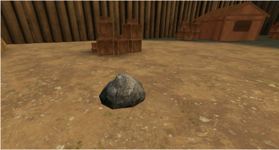
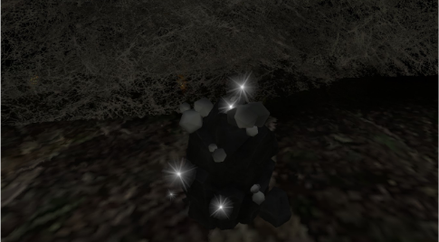
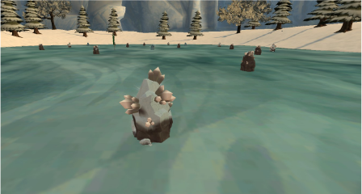
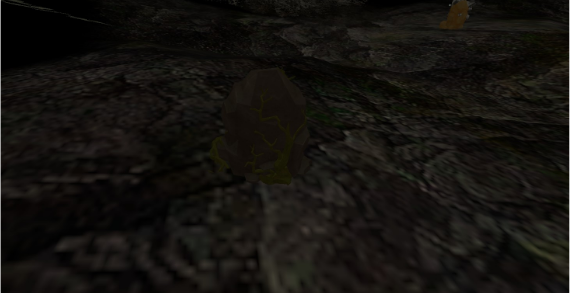
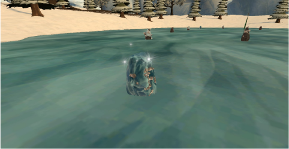
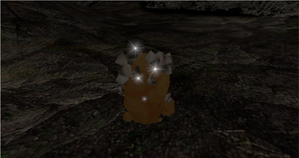
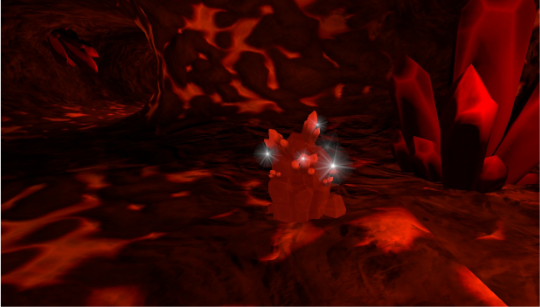

Commune

Minerai de fer
Matériau de base de la forge, accessible à tout Chevalier-Mage.
Il existe plusieurs types de minerai, classés selon leur rareté, avec des taux de réussite d'extraction plus ou moins élevés. On les trouve aux quatre coins du Royaume — et ils sont essentiels pour forger des équipements, voire des clés de donjon qui ouvriront votre ascension dans Clover.







À quoi sert chaque minerai dans la forge du Royaume.
Plusieurs équipements du crépuscule demandent aussi des composants végétaux : fleurs, plantes et champignons du Royaume.
Retrouvez ces ingrédients dans le registre dédié.
Voir Faune & Flore